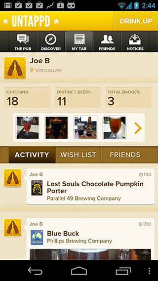
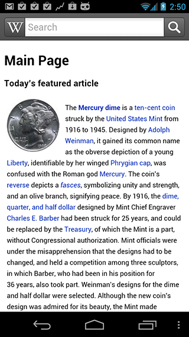

PhoneGap/Cordova for Android Developers
Joe Bowser
jbowser@adobe.com
https://github.com/infil00p
@infil00p
About PhoneGap/Cordova
About PhoneGap
- Started in August 2008
- First commit on Android Implementation on October 2008
- Released first code on October 22, 2008 - Same day as the T-Mobile G1
- Currently supports devices from Android 2.1 to Android 4.1.1+
- For this talk Apache Cordova == PhoneGap
WTF Adobe???
- PhoneGap was started by Nitobi
- Nitobi was acquired by Adobe in October 2011
- Adobe, IBM and others donated PhoneGap to the Apache Software Foundation
What PhoneGap does
- Hybrid application framework that allows developers to use HTML, CSS and Javascript to create applications
- Good for rapid prototyping
- Lowers the barrier of entry for developers to write apps
- This is another tool in the toolbox!
So, When to use Cordova?
- Tight timeframe and need to deploy on iOS, Android and Blackberry
- Common codebase for business logic and UI
- Easier to implement certain things in JS instead of in Java
- Allows developers to use existing skills with Mobile Dev
- No time to redo layout in Android XML
Apps that use Cordova
 DroidGap

- Horrible Name!
- This is the activity that everyone inherits
- This gives users a default layout of just the WebView
Opportunties
- Contribute to Apache Cordova
- Work with Adobe, IBM, Google, RIM and others
- Become an Apache Committer
- Write kick-ass plugins
- Use PhoneGap as another tool in the toolbox